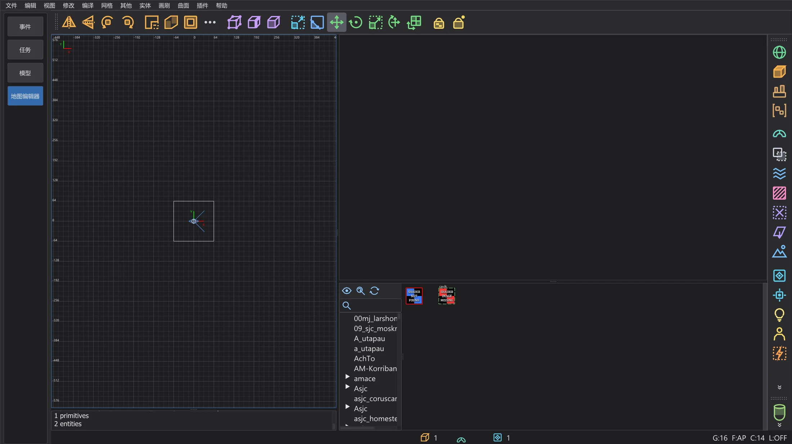
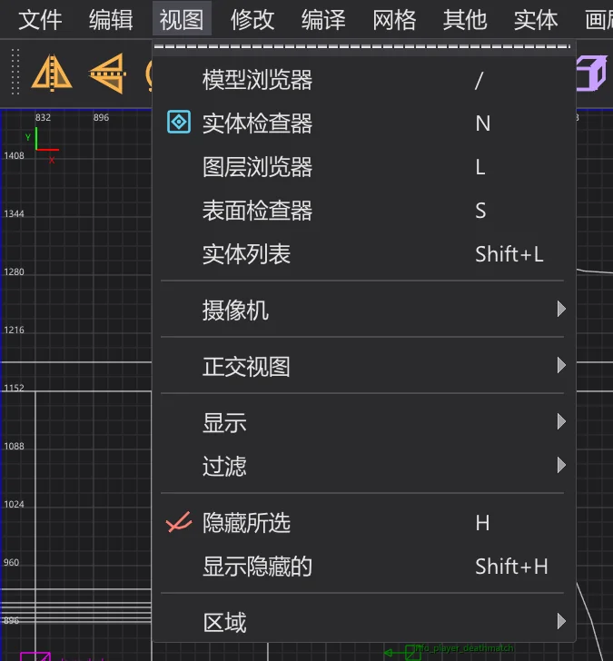
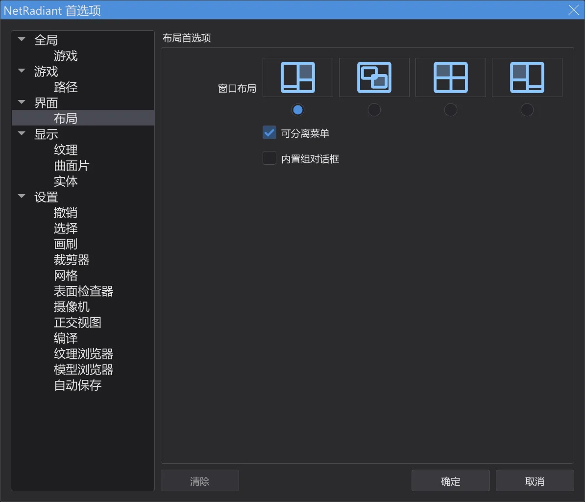
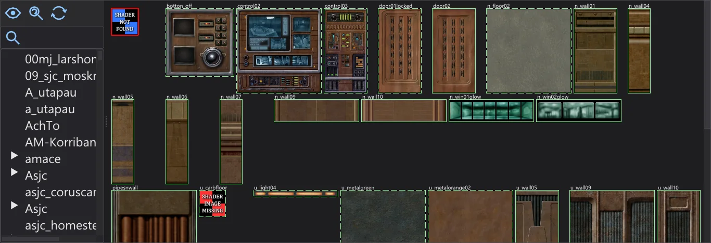
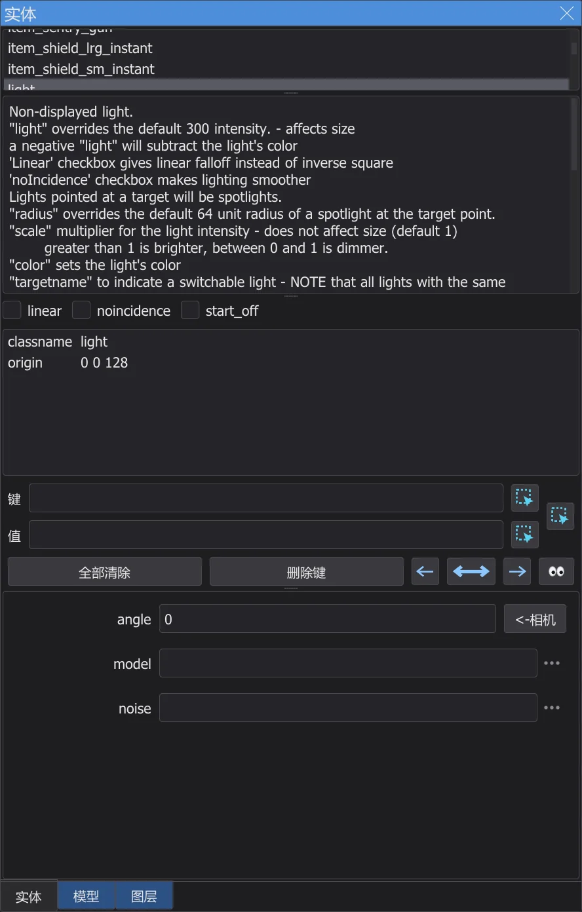
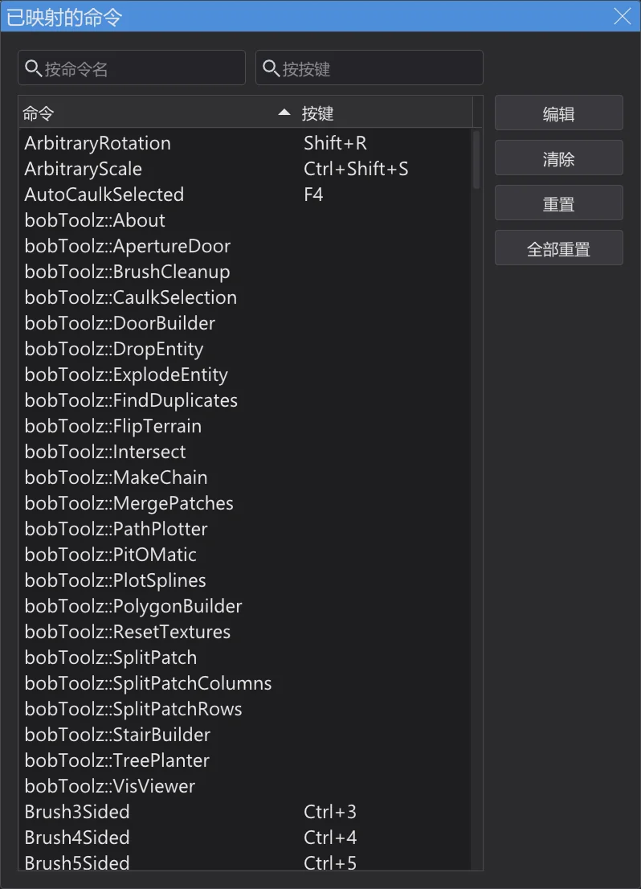

地图编辑器
为 Jedi Academy 和 Jedi Outcast 制作和编辑地图——菜单、窗口和快捷键与 NetRadiant-Custom 相同,为它编写的教程可以一步步照做。

打开和保存地图#
在模式栏切换到 地图编辑器。编辑器使用程序当前设置的游戏——Jedi Academy(也包括 Movie Duels)或 Jedi Outcast——及其纹理、着色器和实体定义;第一次会在后台加载。程序设置中没有游戏文件夹时就没有纹理;在 首选项(游戏 和 路径 页)中,地图编辑器也可以使用其他游戏和其他文件夹。文件 > 新建地图 新建空地图,打开(Ctrl+O)打开 .map 文件,打开 .bsp 打开游戏中已编译的地图(见 地图编辑器:打开并修改已完成的地图 页),保存(Ctrl+S)和 另存为 保存——与 NetRadiant-Custom 一样,之前的文件保留为 .bak。最近打开的地图列在 文件 菜单底部。关闭有未保存更改的地图之前,编辑器会询问是否保存。
菜单、窗口和布局#
菜单、工具栏和对话框的布局与 NetRadiant-Custom(20260114 版)相同:顺序、分隔线、快捷键和助记键(Alt + 带下划线的字母)都一样。标签使用程序语言,颜色来自程序的配色方案。插件见 地图编辑器:插件 页。建造工具见 地图编辑器:建造工具 页,用 q3map2 编译见 地图编辑器:编译地图 页。
在地图编辑器中,程序的菜单栏变为 NetRadiant-Custom 的菜单栏(文件 ... 帮助):只有这一个菜单栏,脚本标签页被隐藏,编辑器紧接在其下方开始。程序在这里也需要的功能放在两个菜单的末尾:其他 中有 语言、配色方案 和 缩放,帮助 中有 手册(F1,本手册)和 关于 BehavEd;检查 NetRadiant 更新 检查本程序的新版本。在模式栏中离开该模式后,程序的菜单和标签页会恢复。
编辑器的每个窗口(二维视图、摄像机、控制台和纹理浏览器)都有一个细边框,便于看清各窗口的边界;窗口之间是 NetRadiant-Custom 带抓点的分隔条。活动窗口(最后点击的窗口)的边框使用配色方案的强调色,就像 NetRadiant-Custom 为活动二维视图描边一样(视图 > 显示 > 显示窗口轮廓 可为二维视图关闭此效果)。拖动分隔条可调整窗口大小;拖到边缘时窗口会折叠,之后可以再拉出来。

编辑 > 首选项(P)包含 NetRadiant-Custom 的首选项。在 布局 页上选择窗口布局——常规、浮动、分割 或 常规(左)——以及包含实体和纹理的组对话框是否嵌入主窗口(内置组对话框)。按下 确定 后新布局立即生效;NetRadiant-Custom 则需要重启。浮动 布局下各窗口浮动在程序窗口内。

二维视图和摄像机#
| 按住右键拖动(二维) | 平移视图 |
| 滚轮、Alt + 按住右键拖动(二维) | 缩放 |
| Ctrl + Tab | 下一个二维视图(XY、XZ、YZ) |
| 鼠标中键(二维) | 将摄像机转向该点;按住 Ctrl 则将摄像机移到该处 |
| 在摄像机中单击右键 | 自由视角开关:鼠标转动视角,W A S D 或方向键移动 |
| 方向键(摄像机) | 前进、后退、转向;A / D 横移;滚轮前后移动 |
| Tab | 摄像机对准选中对象 |
| Shift + [ / ] | 摄像机的绘制方式(线框、平面、纹理……) |
| [ / ] | 网格缩小 / 放大;1 ... 9 直接设置(1 到 256 单位) |
选择和建造#
| 单击左键 | 选择鼠标下的对象;在同一位置再次单击会选择其后方的对象 |
| Shift + 按住左键拖动 | 选择(或取消选择)鼠标经过的所有对象 |
| Shift + 按住右键拖动 | 框选 |
| Ctrl + 鼠标左键(摄像机) | 选择单个面 |
| 在选中对象上按住左键拖动 | 移动;在选中的笔刷旁边:拖动其面来改变大小 |
| 在空白处按住左键拖动(二维,无选中对象) | 用当前纹理拉出一个新笔刷 |
| Esc | 取消选择 |
| Space | 复制选中对象 |
| Delete | 删除选中对象 |
| Ctrl + Z | 撤销 |
| Ctrl + Shift + Z | 重做 |
| Ctrl + C / V | 复制 / 粘贴 |
| H | 隐藏选中对象 |
| Shift + H | 显示所有隐藏对象 |
纹理#

纹理浏览器按文件夹显示游戏的纹理和着色器。在 常规 布局中它位于摄像机下方;在其他布局中用 视图 > 纹理浏览器(T)打开。单击纹理会将其设为当前纹理并应用到选中的笔刷或面;鼠标中键只选取纹理。按住右键拖动可滚动,单击右键打开该纹理的菜单。在摄像机中,用鼠标中键单击一个面会拾取其纹理;配合 Ctrl 或 Shift 则把当前纹理涂到面上,与 NetRadiant-Custom 相同。
实体#

在二维视图中单击右键(不移动鼠标)会打开实体菜单:选择一个类别即可在该点放置新实体。如果选中了笔刷并选择 func_door 这样的笔刷类别,这些笔刷就成为该实体。视图 > 实体检查器(N)显示选中的实体:其类别和说明、以复选框表示的 spawnflags、所有键和值,以及该类别已知键的输入框。输入键和值后按 Enter 即可设置。视图 > 实体列表(Shift+L)列出地图中的所有实体。实体 > 连接实体(Ctrl+K)用 target 和 targetname 连接两个选中的实体。
控制台#
控制台(在 常规 布局中位于二维视图下方,其他布局用 视图 > 控制台,O)显示与 NetRadiant-Custom 相同的消息:加载了什么、缺少纹理和着色器的警告,以及加载和保存所用的时间。
快捷键#

地图编辑器使用 NetRadiant-Custom 的快捷键。只要地图编辑器处于显示状态,它们就有效;此时程序自身的快捷键关闭。编辑 > 快捷键(Ctrl+Shift+P)列出每个命令及其按键;顶部的输入框可按命令名或按按键搜索。双击命令(或按 编辑)后按下新键;清除 删除按键,重置 恢复 NetRadiant-Custom 的按键,全部重置 恢复全部。如果该键已属于其他命令,编辑器会先询问。
[ 和 ] 需要 AltGr(德语键盘:AltGr+8 / 9),它们照样可用——[ 和 ] 改变网格,Shift+AltGr+8 / 9 相当于 Shift+[ / ]。但 Ctrl+[ 和 Ctrl+](远裁剪面拉近 / 远裁剪面推远)无法按出,因为 AltGr 本身已算作 Ctrl+Alt——与 NetRadiant-Custom 完全一样。请使用菜单 视图 > 摄像机,或在 已映射的命令 中为命令 CubicClipZoomIn 和 CubicClipZoomOut 指定其他按键。